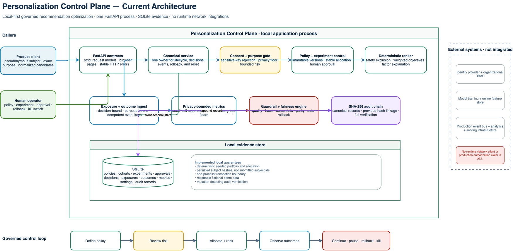
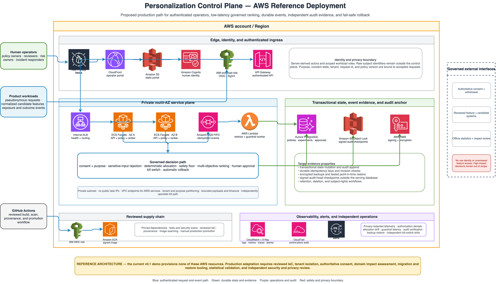

{kind=link}
01Ingress
Product clientPseudonymous subject + normalized candidates
Interactive system map
Current implementation
The downloadable system map distinguishes implemented FastAPI and SQLite behavior from identity, feature, event, and production infrastructure that the demo does not provide.

The API accepts a pseudonymous subject, exact purpose, cohort, and normalized candidate features.
Implementation layers
FastAPI provides the typed HTTP surface, a service layer owns all decisions and transitions, and SQLite retains a fully seeded local state.
Strict request models reject unknown fields and normalized values outside contract.
One application service owns governance checks, deterministic choices, lifecycle transitions, and rollback.
SQLite stores policy versions, cohorts, experiments, approvals, decisions, events, metrics, and audit.
AWS reference deployment
The reference view adds authenticated identity, multi-AZ serving, durable events, replicated state, independent audit evidence, and privacy-redacted operations while keeping consent and impact review explicit.

{kind=link}